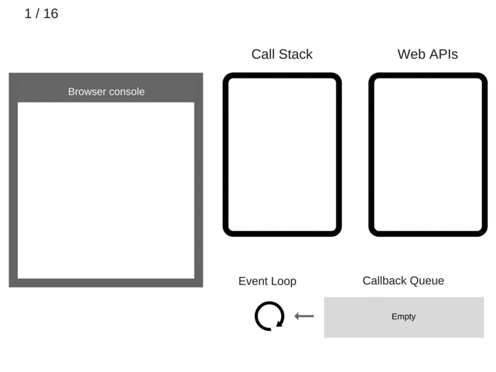

Event Loop
자바스크립트는 단일 스레드 (Single Thread) 기반이기 때문에 이벤트 루프를 사용하여 작업을 스케쥴링 한다.
이것은 시간에 흐름에 따라 코드의 수행을 처리하며 그때마다 JS Engine 을 실행하며 아래 그림과 같은 구조적 특성을 띈다.

이에 따른 이벤트 루프는 단 한가지의 임무만 가지고 있는데 Call Stack 와 Callback Queue 을 감시하는 것 이다.
만약 콜스택이 비어 있으면 이벤트 루프에서는 큐에서 첫번째 이벤트를 가져다가 Call Stack 에 밀어넣는것이며 결과적으로 해당 이벤트가 실행되는 것이다.

대표적인 예로 setTimeout 동작이 있다.
setTimeout 이 자동으로 콜백을 이벤트 루프 큐 안에 넣어주지는 않는다. setTimeout 은 타이머를 설정하며 타이머가 만료되면 호스팅 환경이 콜백을 이벤트 루프에 위치시켜 미래의 Tick 이 이를 가져다 수행할 수 있도록 한다.
setTimeout(() => {
alert('Callback Func');
}, 1000);
즉 위에 코드는 setTimeout 은 1,000ms 후에 실행이 아닌 1,000ms 이후에 Callback Queue 에 추가되는 것이다.

- 콜스택, 콜백큐 등의 모든것이 비워져있다.
console.log('Hi')가 콜스택에 추가되었다.console.log('Hi')가 실행된다.console.log('Hi')가 콜 스택에서 제거되었다.setTimeout(function cb1() {...})가 콜스택에 추가되었다.setTimeout(function cb1() {...})이 실행되면서 브라우저가 웹 API 의 일환인 타이머를 생성한다.
이 타이머는 카운트 다운을 처리한다.setTimeout(function cb1() {...})가 실행이 완료되고 콜스택에서 제거된다.console.log('Bye')가 콜스택에 추가되었다.console.log('Bye')이 실행되었다.console.log('Bye')가 콜스택에서 제거되었다.- 타이머가 완료되면
cb1을 콜백큐에 밀어 넣는다. - 이벤트 루프가
cb1을 콜백큐에서 가져다 콜스택에 밀어 넣는다. cb1이 실행되고console.log('cb1')이 콜스택에 추가된다.console.log('cb1')이 실행된다.console.log('cb1')이 콜 스택에서 제거된다.- 'cb1` 이 콜스택에서 제거된다.
참고자료